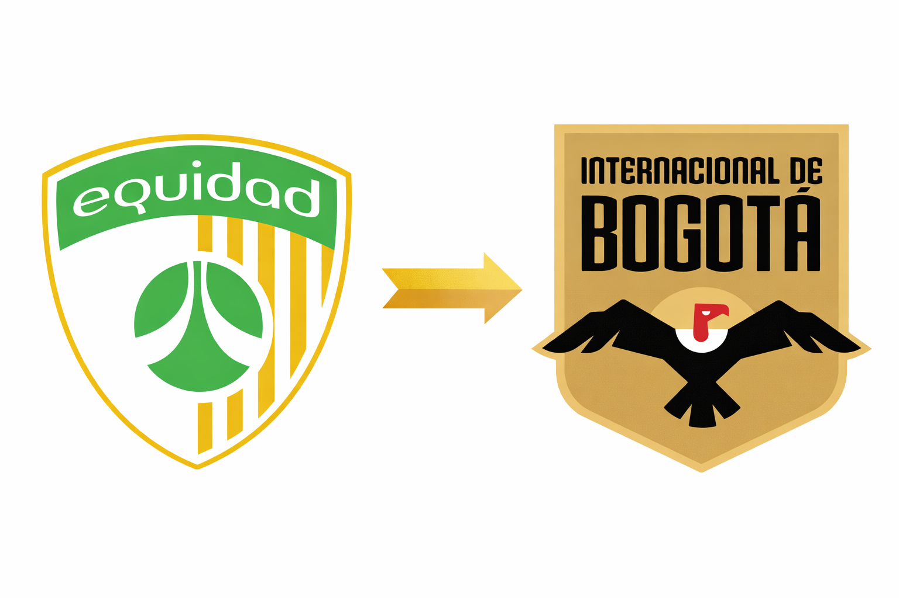
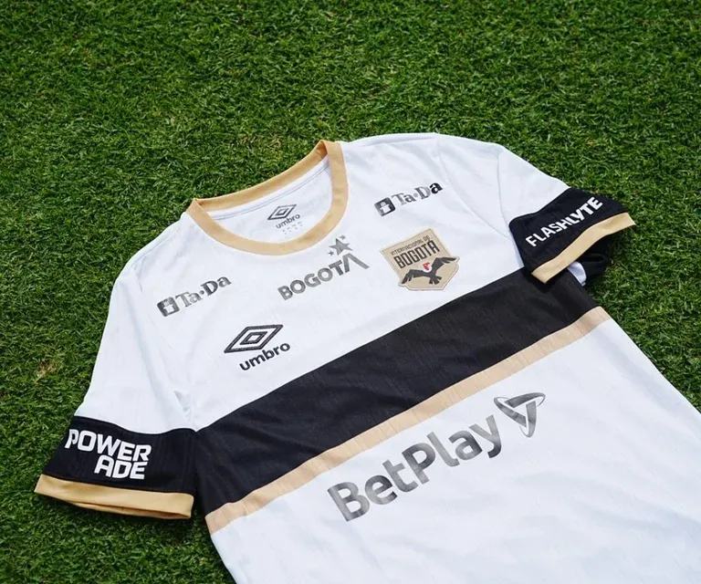

🔥⚽ Inter de Bogotá: ¿proyecto deportivo sólido o reinvención de marca en el fútbol colombiano?
El surgimiento del Inter de Bogotá plantea un nuevo modelo de gestión en la Liga BetPlay, donde identidad, inversión y proyecto deportivo se combinan en una etapa inicial de validación institucional.
📸 Foto: Federación Colombiana de Fútbol
Inter de Bogotá: análisis de un nuevo proyecto institucional en el fútbol colombiano
La temporada 2026 del fútbol colombiano marca un punto de inflexión con la aparición del Inter de Bogotá, club que surge tras la transformación institucional de La Equidad. Más allá del impacto visual que supone el cambio de nombre, escudo e identidad, el caso plantea una discusión de fondo: ¿se trata de una reestructuración estratégica con proyección deportiva o de una operación centrada principalmente en la marca?
Continuidad jurídica y ruptura simbólica
El Inter de Bogotá no nace como un club nuevo en términos legales. Conserva la ficha en Dimayor, la categoría profesional y la historia deportiva de La Equidad. Sin embargo, el club ha optado por una ruptura simbólica deliberada, desligándose de su identidad anterior para construir una narrativa completamente distinta. Este tipo de transformación responde a una tendencia cada vez más frecuente en el fútbol moderno: reformular instituciones tradicionales bajo lógicas de marca global sin perder los activos deportivos existentes.
Identidad de marca y posicionamiento
La nueva identidad del Inter de Bogotá apunta a un posicionamiento claro: representar a Bogotá como una ciudad global y moderna. El nombre, la estética visual y el discurso institucional están orientados a un público joven, urbano y digital, alejándose del modelo clásico de club de barrio. Esta estrategia lo diferencia de los equipos históricos de la capital, pero también lo enfrenta a un desafío relevante: construir sentido de pertenencia en un entorno futbolístico ya consolidado.
📸 Fuente: FIFA
Propiedad e inversión
El proyecto está respaldado por inversión extranjera, lo que introduce variables clave como estabilidad financiera, profesionalización administrativa y proyección internacional. No obstante, la experiencia regional demuestra que el capital, por sí solo, no garantiza resultados deportivos ni arraigo social. El éxito del proyecto dependerá de la coherencia entre la visión empresarial y las decisiones deportivas que se adopten a lo largo del tiempo.
Proyecto deportivo
A nivel deportivo, el Inter de Bogotá ha optado por un discurso prudente. No se han anunciado objetivos desmedidos ni proyectos cortoplacistas. La elección del cuerpo técnico y la conformación de la plantilla sugieren una estrategia basada en el orden institucional, la sostenibilidad financiera y una competitividad progresiva. Este enfoque busca evitar errores comunes en proyectos emergentes que priorizan el impacto mediático sobre la estabilidad deportiva.
Impacto en la Liga BetPlay
Desde una perspectiva estructural, la llegada del Inter de Bogotá aporta elementos positivos al fútbol colombiano. Eleva el nivel de comunicación y marketing, atrae atención internacional e incentiva procesos de modernización en otros clubes. Si bien su impacto deportivo inmediato es limitado, su influencia institucional puede ser significativa a mediano plazo dentro del ecosistema de la Liga BetPlay.
El desafío de la afición
El aspecto más complejo del proyecto es la construcción de hinchada. A diferencia de clubes con décadas de historia, el Inter de Bogotá debe generar vínculos emocionales desde cero bajo su nueva identidad. La estrategia actual se apoya en campañas digitales y activaciones de marca, pero la consolidación de una afición solo se logra con resultados, continuidad y relatos deportivos memorables que conecten con la gente.

📸 Fuente: FIFA
Evaluación general
El Inter de Bogotá no puede ser reducido a una simple operación de marketing, pero tampoco puede ser catalogado aún como un proyecto transformador del fútbol colombiano. Se encuentra en una fase inicial de validación, donde cada decisión deportiva e institucional será determinante para su credibilidad y proyección.
El Inter de Bogotá representa un modelo contemporáneo de gestión futbolística basado en inversión, marca y planificación estratégica. Su verdadero impacto no se medirá únicamente en títulos o clasificaciones, sino en su capacidad para integrarse al ecosistema futbolístico colombiano sin perder coherencia ni identidad. El proyecto es serio, pero aún está en construcción. En el fútbol, como en cualquier institución, la legitimidad se gana con el tiempo y en la cancha.